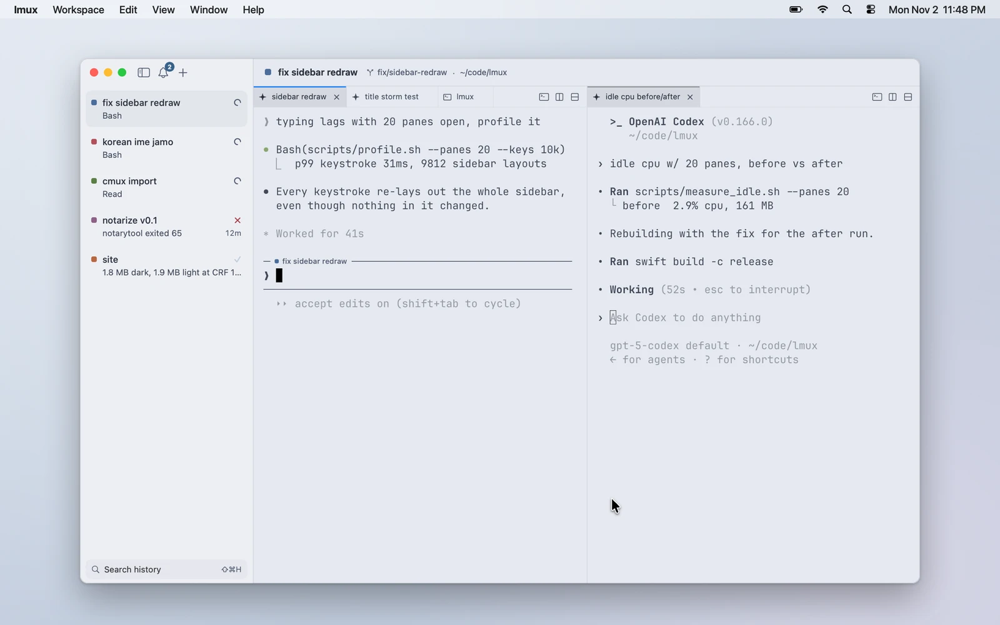
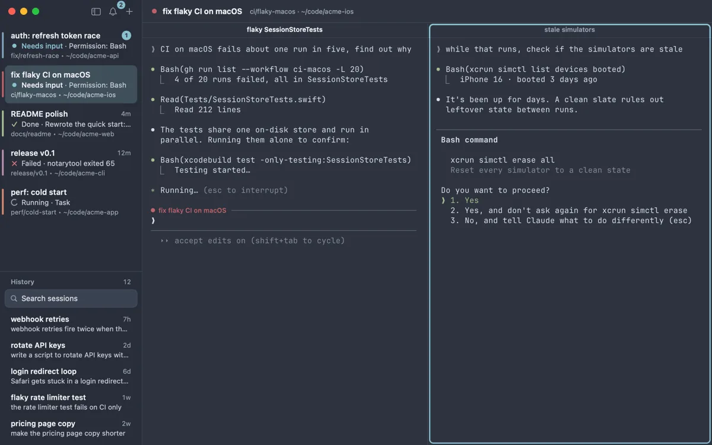
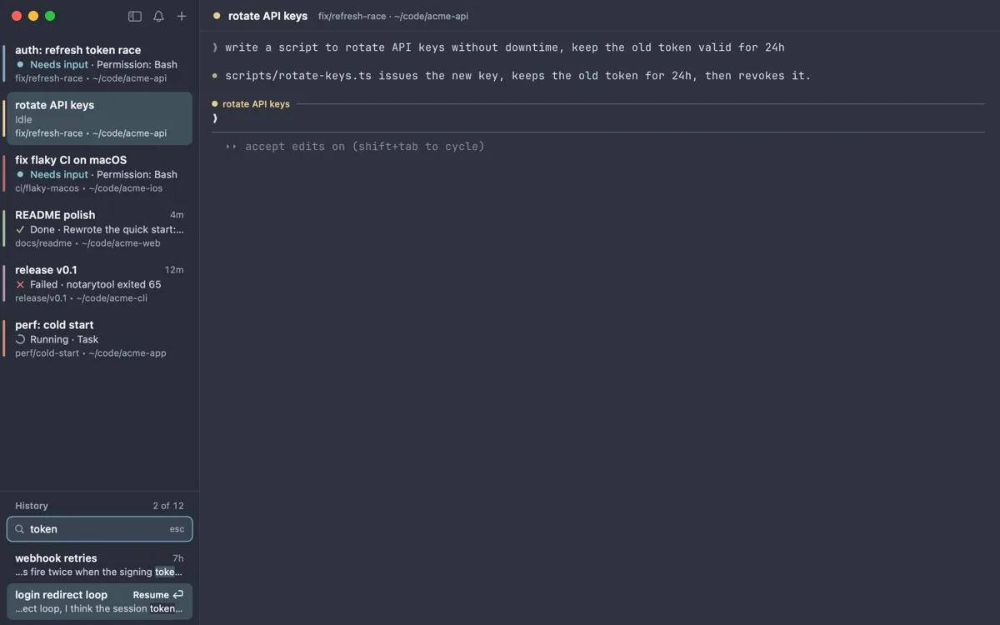
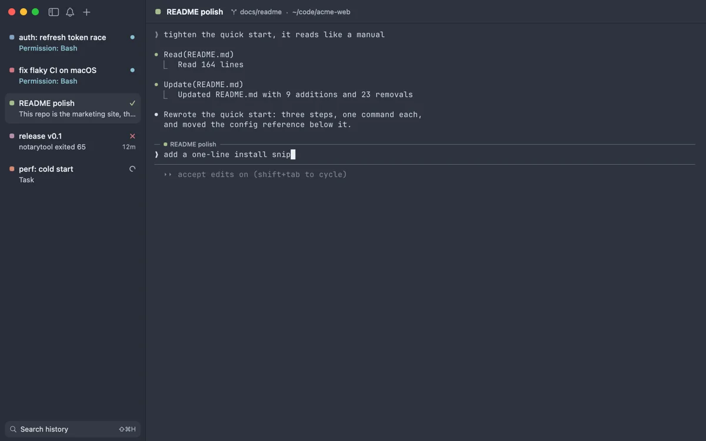
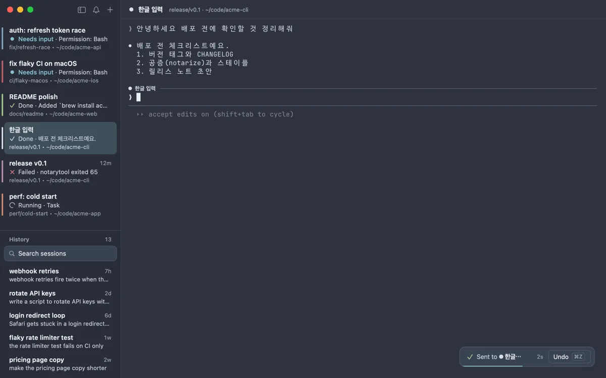

Idles near 0% CPU · native, on libghostty · MIT
light mux.
A light, native macOS terminal for living in Claude Code and Codex all day.
brew install --cask sooftware/tap/lmuxmacOS 14+ on Apple silicon

- App size
- 25 MBcmux: 242 MB
- Memory, 20 workspaces
- 235 MB99 MB in the background · cmux: 661 MB
- Idle CPU, 20 workspaces
- 0.10 %cmux: 8.10 %
- Settings
- ~10cmux: ~200
Why lmux exists
The other day I was working in the terminal and caught myself wondering:
When did terminals get this heavy? And do they really need to be?
Terminal apps these days ship with a browser, SSH workspaces, even PR badges. With that much built in, of course they're heavy. AI has changed a lot about how I work, but to me a terminal is still just text in, text out. Personally, I don't browse the web or open SSH workspaces in it. I'm also a defaults person: I barely touch the settings. The only real difference is that I used to keep one terminal open, and now I'm talking to several agents across a bunch of sessions at once. Meanwhile my terminal kept getting heavier with features I never touched, and the little annoyances added up. So I built lmux: just the parts I actually use, plus a few things I'd always wanted.
Highlights
What lmux does
-
Light.
A 25 MB app that idles near 0% CPU, whether you have one workspace open or twenty. It's native Swift on libghostty. No Electron, no browser engine, and about ten settings.
-
Quit, update, reboot. It all comes back.
Same workspaces, splits and folders, and every Claude Code or Codex session resumes where it left off. Closed one last week? History (⇧⌘H) finds it and brings it back.
-
Know which agent needs you.
Status comes straight from Claude Code's hooks and from Codex itself: running, needs you, done or failed. You get a ring on the pane, a badge on the row and one notification per event, and ⇧⌘J jumps to whoever is waiting. lmux never wraps
claudeorcodex; it only listens. -
Take back a prompt.
You hit Enter, see which pane it went to, and think, “oh, no.” Hover the turn and press ×, and Claude rewinds to just before it, without restarting, like it never happened. ✎ does the same but hands you the prompt back to fix and resend. (Claude Code only.)
-
Bring your cmux setup.
One click brings over your theme, fonts, shortcuts and even your open workspaces. Think of a new browser importing your bookmarks from Chrome. What comes over
-
Korean input that just works.
I'm a Korean developer, so this one's personal. No dropped or mangled syllables while you type, and Hangul takes up exactly two cells. Japanese and Chinese (Pinyin, Zhuyin) got the same treatment: the caret shows inside the text you're composing, arrow keys stay with the IME, and ⌃C is still Ctrl+C.
It also has tabs in every pane, session titles from Claude Code, 26 themes and copy-as-markdown. All features
lmux vs cmux
Memory and idle CPU
Both apps on the same Mac, opened with 1, 10 and 20 workspaces (2 live shells each) and left idle. Lower is better. lmux lets go of its GPU memory when it's not the app you're looking at, so it's measured twice, in front and in the background behind another app. See the methodology.
| Workspaces | lmux, in front | lmux, in the background | cmux 0.65.2 |
|---|---|---|---|
| 1 workspace | 182 MB | 45 MB | 398 MB |
| 10 workspaces | 207 MB | 71 MB | 548 MB |
| 20 workspaces | 235 MB | 99 MB | 661 MB |
| Workspaces | lmux, in front | lmux, in the background | cmux 0.65.2 |
|---|---|---|---|
| 1 workspace | 0.07 % | 0.00 % | 7.16 % |
| 10 workspaces | 0.12 % | 0.00 % | 7.39 % |
| 20 workspaces | 0.10 % | 0.00 % | 8.10 % |
M4 Pro, macOS 26.6.2, lmux 0.0.102 vs cmux 0.65.2. 2 panes per workspace, every shell live, 5 interleaved runs, medians. Memory is the physical footprint of all app processes; app size is the Apple-silicon .app on disk. The screen was locked during the run, so cmux was in the background too. Its memory moves a lot with window state, so treat its numbers as a single snapshot. The shells and agents inside the panes are the same on both sides and aren't counted; this is the terminal's own cost. lmux's 0.07–0.12 % spread across workspace counts is within run-to-run noise.
Idle CPU is the number I care about most, because it's what drains your battery while twenty agents sit there waiting for you to read what they wrote.
Why not lmux?
- You use cmux's in-app browser, SSH workspaces, ports and PR widgets, custom commands, or more scripting than
lmux sendandlmux new-workspacegive you. - You need Linux or Windows.
- You want the knobs. cmux has about two hundred of them.
Then use cmux. It's great, and I'll keep learning from it. The full comparison is in lmux vs cmux.
Tour
See it work
Four short clips. The Claude Code sessions are replayed, so no tokens were spent.




Coming from cmux
Bring your cmux setup.
On first launch, lmux shows you what it found in cmux and brings it over in one click. It doesn't touch cmux itself. Run it again any time from lmux → Import from cmux…
- Theme, fonts (Nerd Font fallbacks included), shortcuts, appearance and notifications
- Your open workspaces from every cmux window, with their names, colors, directories and splits, and their Claude Code / Codex sessions resumed
- If you change your mind, Undo Import puts your config and settings back exactly as they were and closes the imported workspaces
- Anything lmux doesn't have (the browser, SSH workspaces…) is listed, so nothing disappears silently
Every day
Default shortcuts
These are the defaults. A keybind in your Ghostty config overrides them, and the menus show whatever is bound.
- New workspace
- ⌘N
- Split right / down
- ⌘D/⇧⌘D
- Switch workspace
- ⌘1–⌘8, ⌘9 for the last
- Move between panes
- ⌘[/⌘]
- Jump to the agent that needs you
- ⇧⌘J
- Search past sessions
- ⇧⌘H
- Copy / edit & resend / remove a turn
- hover, then ⧉✎×
- Undo the prompt you just sent
- ⌘Z while the “Sent to …” toast is up
Install
Homebrew or a download
Requires macOS 14+ on Apple silicon. To build from source, see App/README.md.
Homebrew
brew install --cask sooftware/tap/lmuxDownload
Open the .dmg and drag lmux.app to Applications. The zip and older versions are on GitHub Releases.
Download for macOSThen
- If you're coming from cmux, lmux offers to bring over your setup and your open workspaces.
- If you use Claude Code, lmux offers to install a few hooks and shows you the exact diff to your
settings.jsonbefore touching anything. - If you use Codex, lmux offers to install Codex hooks too (this time the diff is against
~/.codex/hooks.json). Codex asks once to trust them. Choose Trust all and continue. - Run
claudein any pane. The sidebar starts telling you which agent is running, which is done, and which one is waiting for you.
FAQ
Common questions
- Is this a cmux fork?
- No. It's the same idea with a smaller scope, written from scratch and MIT licensed. There's no cmux code in this repo. Here's how lmux and cmux differ.
- Why not Ghostty and tmux?
- That's what I used before cmux, and it's a fine setup. But it can't give you a sidebar that knows which agent is waiting on you, a prompt you can take back, or Claude and Codex sessions that resume by themselves after a relaunch. lmux is basically libghostty plus those three things.
- Why not send PRs to cmux instead?
- It's a scope thing. lmux is mostly about leaving things out, and you can't send that as a PR to a project that wants them in. I think cmux is right to want them; I just don't use them.
- Does it work without Claude Code?
- Yes. Say no to the hooks and it's a plain Ghostty-based terminal with a sidebar and splits. Agent status and the hover actions only wake up when a
claude(orcodex) is running in a pane. - Does it work with Codex?
- Yes. The Codex CLI gets status, notifications, resume on restart, its own session titles, History and copy as markdown. Edit, remove and undo send are Claude Code only. Codex asks once to trust lmux's hooks (“Trust all and continue”); until you do, it runs without them.
- Other agents? Linux?
- Any CLI runs in it. Resume, History and the hover actions are built for Claude Code and Codex, the two I live in, but any agent gets status and notifications by reporting its state the way Codex does, with one escape sequence (OSC 7501); see any agent. Linux and Windows, no. lmux is native AppKit on libghostty, and a port would be a different app.
- Does it phone home?
- No. lmux makes no network calls at all. No telemetry, no crash reports, not even an update check (Homebrew does that). Everything it writes to disk, and how to remove it, is listed in one paragraph on the features page.
- Will lmux get an in-app browser or computer use?
- No. Putting a browser engine in the terminal would defeat the whole point. Claude Code already drives browsers and your screen through MCP servers (Playwright, for one) and Claude in Chrome, and lmux is just the terminal Claude Code runs in. If you want to script lmux itself, the bundled
lmuxCLI can list panes, send input to them and wait for an agent to finish (lmux wait), so Claude can start a Codex review in a new workspace and read the result. See lmux for agents. - Why “lmux”?
- The l is for light. Say it “el-mux.”
- Will you add feature X?
- Only if it stays light. Either way, open an issue and tell me who it's for.
brew install --cask sooftware/tap/lmuxmacOS 14+ on Apple silicon